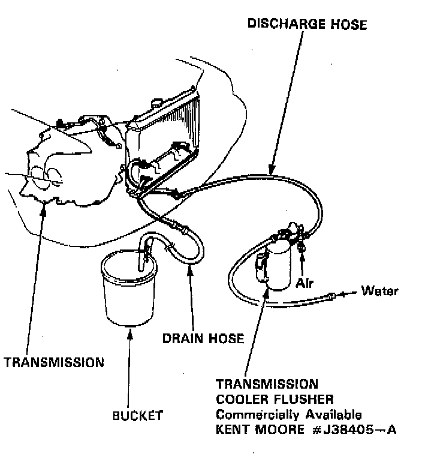
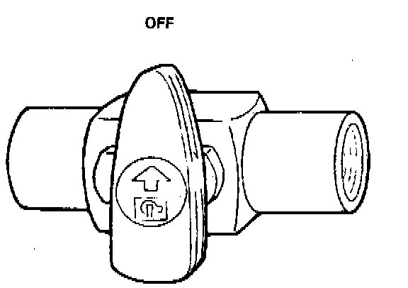

Transmission Cooler: Service and Repair
COOLER FLUSHINGWARNING: To prevent injury to face and eyes, always wear safety glasses or a face shield when using the transmission flusher.
NOTE: This procedure should be performed before reinstalling the transmission.
1. Check tool and hoses for wear and cracks before using. If wear or cracks are found, replace the hoses before using.
2. Using the measuring cup, fill the tank with 21 ounces (approximately 2/3 full) of biodegradable flushing fluid (J35944-20). Do not substitute with any other fluid. Follow the handling procedure on the fluid container.
3. Secure the flusher filler cap, and pressurize the tank with compressed air to between 550 - 829 kPa (80 - 120 psi).
NOTE: The air line should be equipped with a water trap to ensure a dry air system.
4. Hang the tool under the vehicle.
5. Attach the discharge hose of the tank to the return line of the transmission cooler using a clamp.

6. Connect the drain hose to the inlet line of the transmission cooler using a clamp. Securely clamp the opposite end of the drain hose to a bucket or floor drain.

7. With the water and air valves off, attach the water and air supplies to the flusher. (Hot water if available.)
8. Turn on the flusher water valve so water will flow through the ATF cooler for 10 seconds. If water does not flow through the ATF cooler, it is completely plugged, cannot be flushed, and must be replaced.
9. Depress the trigger to mix the flushing fluid into the water flow. Use the wire clip to hold the trigger down.
10. While flushing with the water and flushing fluid for two minutes, turn the air valve on for five seconds every 15 - 20 seconds to create a surging action.
- AIR PRESSURE: MAX 829 kPa (120 psi)
11. Turn the water valve off. Release the trigger, then reverse the hoses to the cooler so you can flush in the opposite direction. Repeat steps 8 through 10.
12. Release the trigger and allow water only to rinse the cooler with water for one minute.
13. Turn the water valve off and turn off the water supply.
14. Turn the air valve on to dry the system out with air for two full minutes or until no moisture is visible leaving the drain hose.
CAUTION: Residual moisture in the ATF cooler or pipes can damage the transmission.
15. Remove the flusher from the cooler line. Attach the drain hose to a fluid container.
16. Install the transmission and leave the drain hose attached to the cooler line.
17. Make sure the transmission is in P position. Fill the transmission with ATF, and run the engine for 30 seconds or until approximately one quart is discharged.
18. Remove the drain hose, and reconnect the cooler return hose to the transmission.
19. Refill the transmission with ATF to the proper level.